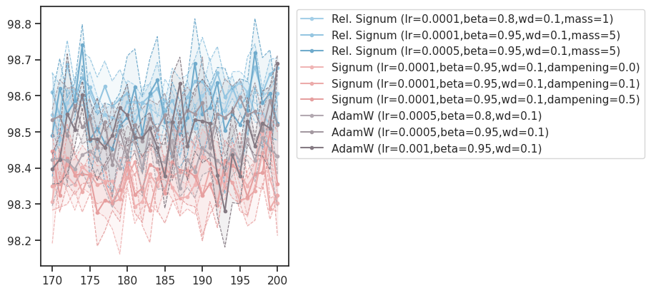
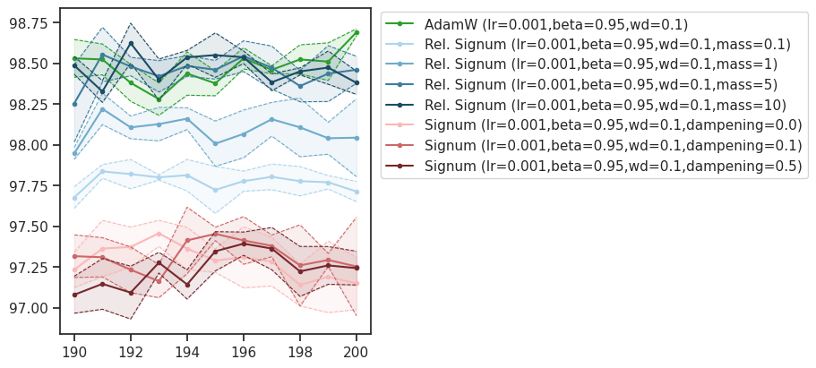
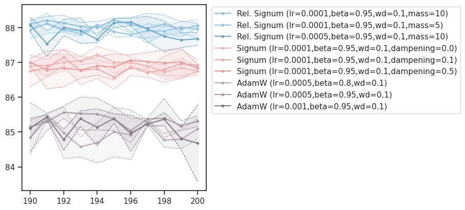
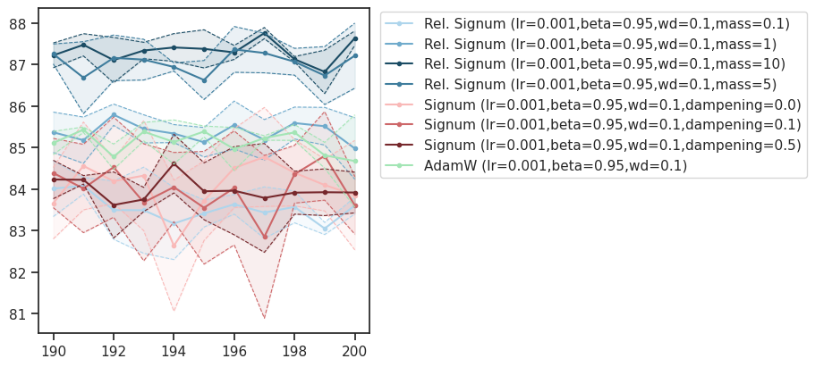
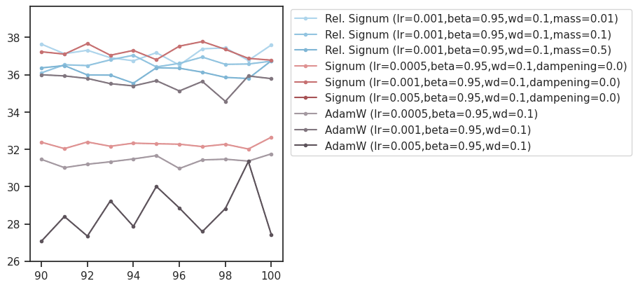
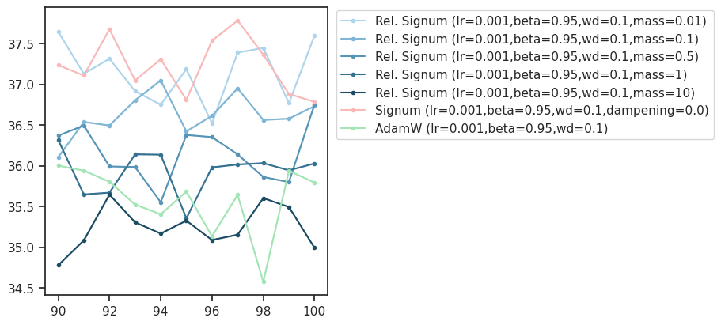
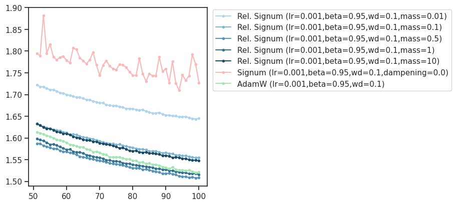

GRA: signum figs (mnist, cifar, imgnet)#
project = GRA, host = any, device = any
# HIDE CODE
from experiments.figures.fighelper import (
generate_optimizer_cmap,
parse_optimizer_key,
get_varying_params,
)
def get_cmap(keys, family_colors=None, verbose=False):
family_colors = family_colors or {
'Rel. Signum': 'bluish',
'Signum': 'reddish',
'AdamW': 'grayish',
}
# Generate colormap
cmap, info = generate_optimizer_cmap(
keys, family_colors=family_colors)
if verbose:
print("Family Info:")
for family, finfo in info.items():
print(f" {family}: sorted by {finfo['sort_params']}, {finfo['n_configs']} configs")
# print("\nGenerated Colors (sample):")
# for i, (key, color) in enumerate(cmap.items()):
# if i < 5 or i >= len(cmap) - 3:
# print(f" {key[:55]:55s} -> {matplotlib.colors.rgb2hex(color)}")
# elif i == 5:
# print(" ...")
# Visualize as color swatches per family
fig, axes = plt.subplots(1, 3, figsize=(16, 8))
for ax, family in zip(axes, ['AdamW', 'Rel. Signum', 'Signum']):
# Get all keys for this family in sorted order
family_keys = [k for k in keys if k.startswith(family + ' ')]
# Sort by the hierarchical order (same as cmap generation)
parsed_configs = [(k, parse_optimizer_key(k)[1]) for k in family_keys]
varying = get_varying_params([p for _, p in parsed_configs])
def sort_key(item):
_, params = item
return tuple(params.get(p, 0) for p in varying)
sorted_keys = [k for k, _ in sorted(parsed_configs, key=sort_key)]
colors = [cmap[k] for k in sorted_keys]
# Create color swatch visualization
n = len(sorted_keys)
for i, (key, color) in enumerate(zip(sorted_keys, colors)):
ax.barh(i, 1, color=color, height=0.9)
ax.set_yticks(range(n))
# Show abbreviated labels (just the varying params)
labels = []
for k in sorted_keys:
_, params = parse_optimizer_key(k)
label = ', '.join(f'{p}={params[p]}' for p in varying if p in params)
labels.append(label)
ax.set_yticklabels(labels, fontsize=7)
ax.set_xlim(0, 1)
ax.set_xticks([])
ax.set_title(f'{family}\n(sorted by: {", ".join(varying)})', fontsize=14)
ax.invert_yaxis()
plt.tight_layout()
plt.show()
return cmap
def _sort_optim_family(results, optimizer_names):
def sort_key(k):
for i, name in enumerate(optimizer_names):
if k.startswith(name):
return (i, k)
return (len(optimizer_names), k)
return {k: results[k] for k in sorted(results, key=sort_key)}
def _prep_data(results_dict, n_top_fits=3, n_last_timepoints=10):
# model_accuracies (avg of last n timepoints)
model_accuracies = collections.defaultdict(dict)
for k, d in results_dict.items():
name = k.split('(')[0].strip()
acc = d['test_acc'].mean(0)[-n_last_timepoints:].mean()
model_accuracies[name][k] = acc
model_accuracies = {
k: dict(sorted(d.items(), key=lambda t: t[1]))
for k, d in model_accuracies.items()
}
# select best n fits per optim family
best_n_models = {
k: dict(list(d.items())[-n_top_fits:])
for k, d in model_accuracies.items()
}
# best n fits (keys only)
best_n_models_strings = [
x for d in best_n_models.values()
for x in list(d)
]
return model_accuracies, best_n_models, best_n_models_strings
def _plot(
results, key='test_acc',
intvl=slice(-21, None),
colors=None, smooth=None, ylim=None,
figsize=(9, 4), dpi=100, ):
fig, ax = create_figure(1, 1, figsize=figsize, dpi=dpi)
for i, (k, d) in enumerate(results.items()):
if colors is not None:
color = colors[k]
else:
color = f"C{i}"
mu = d[key].mean(0)
sd = d[key].std(0)
if smooth is not None:
mu = smooth_savgol(mu, smooth, polyorder=3)
sd = smooth_savgol(sd, smooth, polyorder=3)
xs = np.arange(1, len(mu) + 1)
xs = xs[intvl]
mu = mu[intvl]
sd = sd[intvl]
ax.plot(xs, mu + sd, color=color, ls='--', lw=0.8, alpha=1.0)
ax.plot(xs, mu, color=color, label=k, marker='.')
ax.plot(xs, mu - sd, color=color, ls='--', lw=0.8, alpha=1.0)
plt.fill_between(xs, mu - sd, mu + sd, color=color, alpha=0.1)
if ylim is not None:
ax.set(ylim=ylim)
ax.legend()
move_legend(ax, (1.01, 1.01))
plt.show()
return
device_idx = 1
device = f'cuda:{device_idx}'
print(f"device: {device} ——— host: {os.uname().nodename}")
device: cuda:1 ——— host: mach
Results: MNIST#
results_mnist = 'MNIST_results_jan02.npy'
results_mnist = pjoin(tmp_dir, results_mnist)
results_mnist = np.load(results_mnist, allow_pickle=True).item()
optimizer_names = ['Rel. Signum', 'Signum', 'AdamW']
results_mnist = _sort_optim_family(results_mnist, optimizer_names)
cmap = get_cmap(list(results_mnist))
model_accuracies, best_n_models, best_n_models_strings = _prep_data(
results_dict=results_mnist)
print(best_n_models)
{ 'Rel. Signum': { 'Rel. Signum (lr=0.0005,beta=0.95,wd=0.1,mass=5)': 98.57666666666667, 'Rel. Signum (lr=0.0001,beta=0.8,wd=0.1,mass=1)': 98.58200000000001, 'Rel. Signum (lr=0.0001,beta=0.95,wd=0.1,mass=5)': 98.62833333333333 }, 'Signum': { 'Signum (lr=0.0001,beta=0.95,wd=0.1,dampening=0.1)': 98.35166666666666, 'Signum (lr=0.0001,beta=0.95,wd=0.1,dampening=0.5)': 98.38166666666667, 'Signum (lr=0.0001,beta=0.95,wd=0.1,dampening=0.0)': 98.389 }, 'AdamW': { 'AdamW (lr=0.0005,beta=0.8,wd=0.1)': 98.43966666666668, 'AdamW (lr=0.001,beta=0.95,wd=0.1)': 98.471, 'AdamW (lr=0.0005,beta=0.95,wd=0.1)': 98.54133333333334 } }
selected_results = {
k: v for k, v in results_mnist.items()
if k in best_n_models_strings
}
_plot(selected_results, intvl=slice(-31, None), colors=cmap)

selected_keys = sorted([
k for k in results_mnist if
'lr=0.001,beta=0.95' in k
], key=alphanum_sort_key)
selected_results = {k: results_mnist[k] for k in selected_keys}
selected_cmap = get_cmap(selected_results, family_colors={
'Rel. Signum': 'bluish', 'Signum': 'red', 'AdamW': 'green'})
selected_cmap['AdamW (lr=0.001,beta=0.95,wd=0.1)'] = 'C2'
_plot(selected_results, intvl=slice(-11, None), colors=selected_cmap)

Results: CIFAR10#
results_cifar = 'CIFAR10_results_jan03.npy'
results_cifar = pjoin(tmp_dir, results_cifar)
results_cifar = np.load(results_cifar, allow_pickle=True).item()
optimizer_names = ['Rel. Signum', 'Signum', 'AdamW']
results_cifar = _sort_optim_family(results_cifar, optimizer_names)
cmap = get_cmap(list(results_cifar))
model_accuracies, best_n_models, best_n_models_strings = _prep_data(
results_dict=results_cifar)
print(best_n_models)
{ 'Rel. Signum': { 'Rel. Signum (lr=0.0005,beta=0.95,wd=0.1,mass=10)': 87.84566666666667, 'Rel. Signum (lr=0.0001,beta=0.95,wd=0.1,mass=5)': 87.94333333333334, 'Rel. Signum (lr=0.0001,beta=0.95,wd=0.1,mass=10)': 88.081 }, 'Signum': { 'Signum (lr=0.0001,beta=0.95,wd=0.1,dampening=0.1)': 86.83933333333333, 'Signum (lr=0.0001,beta=0.95,wd=0.1,dampening=0.5)': 86.90966666666667, 'Signum (lr=0.0001,beta=0.95,wd=0.1,dampening=0.0)': 86.94200000000001 }, 'AdamW': { 'AdamW (lr=0.0005,beta=0.8,wd=0.1)': 84.95433333333332, 'AdamW (lr=0.001,beta=0.95,wd=0.1)': 85.119, 'AdamW (lr=0.0005,beta=0.95,wd=0.1)': 85.35999999999999 } }
selected_results = {
k: v for k, v in results_cifar.items()
if k in best_n_models_strings
}
_plot(selected_results, intvl=slice(-11, None), colors=cmap)

selected_results = {
k: v for k, v in results_cifar.items()
if 'lr=0.001,beta=0.95' in k
}
selected_cmap = get_cmap(selected_results, family_colors={
'Rel. Signum': 'bluish', 'Signum': 'red', 'AdamW': 'green'})
_plot(selected_results, intvl=slice(-11, None), colors=selected_cmap)

Results: ImageNet32#
TODO: awaiting ImgNet fits wiht seeds. That should clarify better
results_imgnet = 'ImageNet32_results_jan06.npy'
results_imgnet = pjoin(tmp_dir, results_imgnet)
results_imgnet = np.load(results_imgnet, allow_pickle=True).item()
optimizer_names = ['Rel. Signum', 'Signum', 'AdamW']
results_imgnet = _sort_optim_family(results_imgnet, optimizer_names)
cmap = get_cmap(list(results_imgnet) + list(results_cifar))
model_accuracies, best_n_models, best_n_models_strings = _prep_data(
results_dict=results_imgnet)
print(best_n_models)
{ 'Rel. Signum': { 'Rel. Signum (lr=0.001,beta=0.95,wd=0.1,mass=0.5)': 36.13080000000001, 'Rel. Signum (lr=0.001,beta=0.95,wd=0.1,mass=0.1)': 36.6742, 'Rel. Signum (lr=0.001,beta=0.95,wd=0.1,mass=0.01)': 37.1022 }, 'Signum': { 'Signum (lr=0.005,beta=0.95,wd=0.1,dampening=0.0)': 3.4453999999999994, 'Signum (lr=0.0005,beta=0.95,wd=0.1,dampening=0.0)': 32.262, 'Signum (lr=0.001,beta=0.95,wd=0.1,dampening=0.0)': 37.230000000000004 }, 'AdamW': { 'AdamW (lr=0.005,beta=0.95,wd=0.1)': 28.692, 'AdamW (lr=0.0005,beta=0.95,wd=0.1)': 31.3728, 'AdamW (lr=0.001,beta=0.95,wd=0.1)': 35.544 } }
selected_results = {
k: v for k, v in results_imgnet.items()
if k in best_n_models_strings
}
_plot(selected_results, intvl=slice(-11, None), ylim=(26, None), colors=cmap)

selected_results = {
k: v for k, v in results_imgnet.items()
if 'lr=0.001,beta=0.95' in k
}
selected_cmap = get_cmap(selected_results, family_colors={
'Rel. Signum': 'bluish', 'Signum': 'red', 'AdamW': 'green'})
_plot(selected_results, intvl=slice(-11, None), colors=selected_cmap)

selected_results = {
k: v for k, v in results_imgnet.items()
if 'lr=0.001,beta=0.95' in k
}
selected_cmap = get_cmap(selected_results, family_colors={
'Rel. Signum': 'bluish', 'Signum': 'red', 'AdamW': 'green'})
_plot(selected_results, key='train_loss', intvl=slice(-50, None), colors=selected_cmap)
